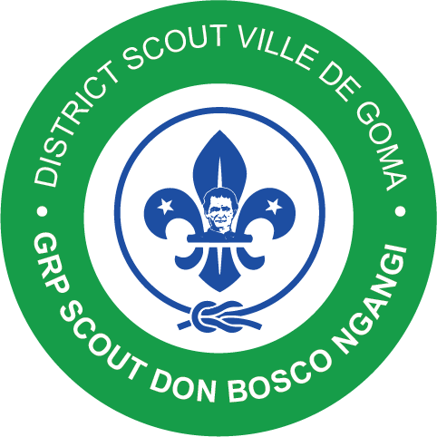

Chaque jeune évolue progressivement à travers les différentes branches selon son âge et sa progression.
Tranche d'âge : 8 à 12 ans
La Meute accueille les plus jeunes. Ils découvrent le scoutisme à travers le jeu, les histoires de la Jungle, la fraternité et le respect.
Tranche d'âge : 12 à 17 ans
La Troupe développe l'autonomie, le sens du devoir, l'esprit d'équipe et le leadership.
Tranche d'âge : 17 à 20 ans
La Compagnie prépare les jeunes à devenir des citoyens engagés et des leaders responsables.
À partir de 20 ans
Le Clan accompagne les jeunes adultes dans leur engagement personnel, professionnel et citoyen.
Meute ➜ Troupe ➜ Compagnie ➜ Clan des Routiers
Un scout progresse naturellement d'une branche à l'autre selon son âge, son évolution et sa progression.